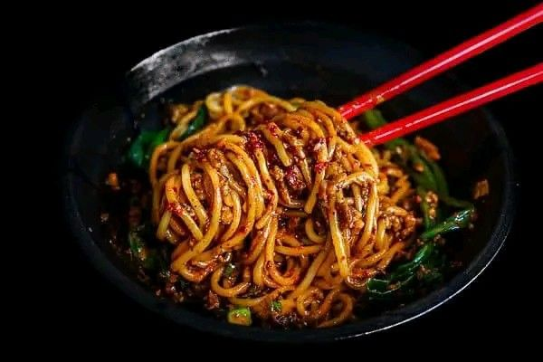
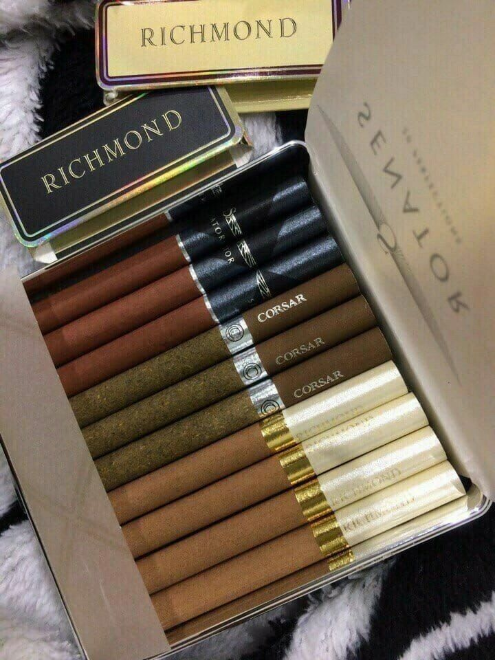

Kopi

KOPI, adalah singkatan dari ketika otak perlu inspirasi. Kopi akan memberimu inspirasi tentang apa yang tidak pernah kamu sangka sebelumnya. Saat bangun tanpa ada secangkir kopi itu bikin diri ini merasa ada salah satu rantai makanan yang hilang.
Mie
Mie adalah produk pangan yang terbuat dari terigu dengan atau tanpa penambahan bahan pangan lain dan bahan tambahan pangan yang diizinkan, berbentuk khas mie. Sekitar empat puluh persen konsumsi gandum di Asia adalah mie. Mie merupakan salah satu produk yang banyak digemari oleh masyarakat Indonesia.
Rokok
rokok adalah hasil olahan tembakau dibungkus termasuk cerutu ataupun bentuk lainnya yang dihasilkan dari tanaman Nicotiana tabacum, Nicotiana rustica dan spesies lainnya atau sintesisnya yang mengandung nikotin dan tar dengan atau tanpa bahan tambahan.